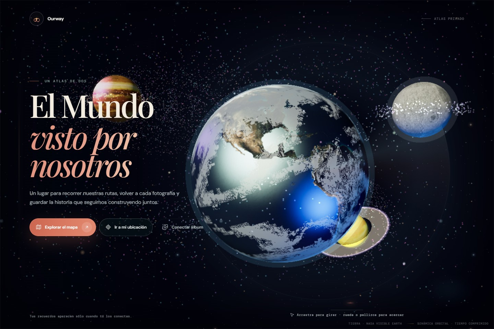

An album you travel through
A travel album you browse like a map: every memory, photo or video, appears where it was taken, and the route links them in the order they happened.
Ourway is a private travel atlas. It opens on a 3D (three-dimensional) world you can spin, then drops into a touch map where each trip's route rebuilds itself from where and when the photos were taken. The demo keeps the original orbital scene, planets, textures and navigation; the sample trip is empty and no private albums are connected.
Frontend demo · fictional data · no connected company services.

A travel album you browse like a map: every memory, photo or video, appears where it was taken, and the route links them in the order they happened.
Trip photos end up as a list of files. And when an album is shared by link, the service strips each photo's GPS location.
It reads only the originals' metadata (EXIF in photos, the data the camera stores, and the internal header of videos) to recover place and time without uploading the file, then matches it to the album memory by capture time.
Google sign-in; only authorized accounts get through.
Name it, register its album links and, if you like, mark the start and end points.
Add the originals: only their place and time are read; the photo is never uploaded.
Watch the animated route on the map, browse favorites or make a film set to music.
The app ships with no demo trips, routes or photos: everything comes from real data.
Earth at its real 23.4° tilt, the day-night line, procedurally generated clouds, atmosphere, a Moon on an elliptical orbit, Saturn, comets and layered stars. It moves with inertial dragging, the mouse wheel, the keyboard or a pinch.
A cinematic transition drops from the globe into a map with touch zoom, routes and memory pins.
The route is snapped to real roads with an open-source routing service. If it fails, the original line stays, with no on-screen errors.
Pick a song: it detects the beats and builds a slideshow with slow zooms on each photo, cutting on the beat. The video is recorded right in the browser and downloaded.
A marker travels the route at constant speed, even when the photos were taken in bursts.
It builds a compact trip summary for iPhone widgets, with no access to credentials or the database.
React interface built with Vite. The 3D scene uses React Three Fiber, which drives Three.js (the web 3D library on top of WebGL, the browser's accelerated graphics) from React.
Vector map with MapLibre GL; routes are stored as GeoJSON, the standard format for geographic data.
A custom reader skips the video payload by its declared size: a video of hundreds of MB costs only a few KB of reads, with caps that rule out endless reads.
The map only downloads when you enter it. If the device doesn't support WebGL, a 2D-drawn fallback scene and an image-tile map take over.
Firebase (Google's app platform) authentication, Firestore database and storage. Configuration lives in environment variables, never in the repository.
Lower 3D density on phones, pauses when the tab is hidden and honors the reduced-motion preference. 70 Vitest tests cover routes, rhythm and metadata.
Frontend demo · fictional data · no connected company services.